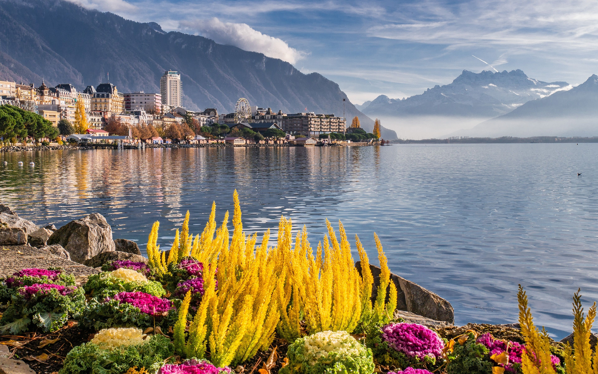
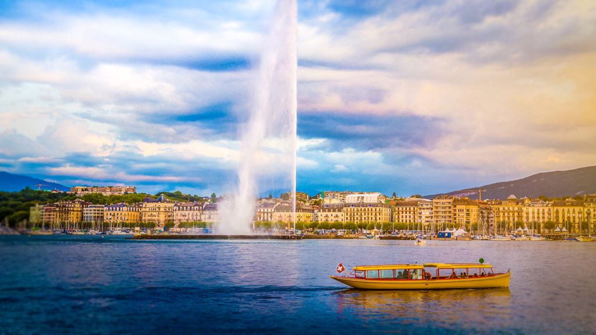

U Švajcarskoj postoji mnogo destinacija koje su vredne obilaska! To je najlepša zemlja na svetu! Poseduje bujne zelene, šarene livade i planine od kojih zastaje dah. Pored toga, zemlja je poznata po svojim istorijskim gradovima, neodoljivim rekama, zasneženim planinama, živopisnim jezerima. Pitate se šta da posetite u Švajcarskoj? Pročitate ovaj članak kako ne biste propustiti da obiđete sve zanimljivosti na svom putovanju u ovu prelepu zemlju!
Ženeva je drugi grad po naseljenosti u Švajcarskoj nakon Ciriha. Nalazi se duž švajcarskih Alpa i samo 60 milja od Francuske.
Zbog toga je ona metropola francuskog govornog područja, smeštena na obali Ženevskog jezera. Poznata po prekrasnom pogledu na Ženevsko jezero, najveće jezero zapadne Evrope i najdublje u celoj Evropi.
Predstavlja jedno od najboljih mesta za posetu u Švajcarskoj i ostaje vodeća turistička destinacija zbog ukusne čokolade, luksuznih satova i bogate istorije. Prekrasna fontana Jet d’eau u jezeru je orijentir Ženeve; to je najstarija fontana na svetu, a voda u jezeru je bezbedna za piće.
Ženeva je najpoznatija po svojim istorijskim mestima, muzejima i starom gradu; jedna stvar koju morate učiniti u Ženevi je da posetite stari grad. Ovaj grad je star više od 2000 godina, a ulice se izvijaju uz brda.
Zabavna stvar koju treba raditi tokom dana je odlazak do jezera; možete na krstarenje brodom koji vam omogućava da istražite grad i okolna sela
Još jedna divna stvar koju morate videti na Ženevskom jezeru je najslavnija fontana, Jet d'eau, koja je visoka 140 metara, nalazi se miljama daleko.
U Ženevi možete da pozajmite besplatan bicikl. Samo predajte ličnu kartu i 20 švajcarskih franaka kao depozit za bicikl prema starom gradu Ženevi da biste otkrili popularno susedstvo u mediteranskom stilu.
Cirih je najveći grad Švajcarske, koji privlači putnike zainteresovane za kulturu, jer se može pohvaliti sa više od 50 muzeja i preko 100 umetničkih galerija.
Kada se posetioci umore od kupovine međunarodno poznate robe švajcarskog brenda; mogu se provozati brodom po jezeru Cirih ili planinariti obližnjim planinama.Ne sme se propustiti Švajcarski nacionalni muzej, smešten u zamku nalik onim iz bajki; posvećen je kulturnoj istoriji Švajcarske.
Cirih možda nije politički glavni grad zemlje, ali je socijalni i ekonomski centar; većina itinerera obilazaka uključuje posetu živopisnom starom gradu.

U srcu Ciriha, možete posetiti Urania Sternwarte da biste velikim teleskopom posmatrali više planeta i dosezali zvezde, takodje možete videti i živopisne poglede na grad. Opservatorija nudi obilazak s vodičem i nesumnjivo je nezaboravno iskustvo.
Jedna od najboljih stvari u Cirihu je vožnja biciklom po prelepom jezeru. Cirih ima besplatan program iznajmljivanja bicikala.
U starom gradu ćete pronaći klubove sa najvišom koncentracijom u celoj Švajcarskoj, kao i prodavnice koje traju kilometrima.
Švajcarska ima samo jedan nacionalni park, ali ovaj je vrlo posebno mesto koje treba posetiti u Švajcarskoj.
Osnovan je 1914. godine i pokriva 172,3 kvadratna kilometra zaštićene divljine i lišća na 80 kilometara staze. Što omogućava posetiocima da istražuju pažljivo očuvano alpsko okruženje.
Deo UNESCO-ovog rezervata biosfere, dom je prelepog pejzaža i divljih životinja. Očekujte da vidite vijugave divlje azurno reke, zapanjujuće vrhove i gusta područja prelepe alpske šume.

Primarne aktivnosti su planinarenje i gledanje. U parku nisu dozvoljeni bicikli, šatori, požari i peći, a ne postoji dozvola za noćenje.
A ako volite divlje cveće, istražićete razno cveće koje raste u ovom regionu, kao što su Edelveiss, zvončići, gentian i još mnogo toga. I naravno, odvojite vreme da uživate u zapanjujućem pogledu.
Od visokih vrhova do ledenoplavih jezera i visokih stabala, nikada nećete izaći iza ugla, a da vam ponovo ne bude oduzet dah.
U Švajcarskom nacionalnom parku videćete puno divljih životinja. Ne skidajte oči s kozoroga, divokoze, svizaca, zečeva, guštera i ptica.
Zemlja je veoma otvorena za turiste i takođe ima značajan broj ponuda zbog kojih putovanje u zemlji postaje brzo; ima četiri nacionalna jezika. Tu spadaju francuski, retoromanski, nemački i italijanski. Pitate se gde da odete u Švajcarsku? Sada znate!